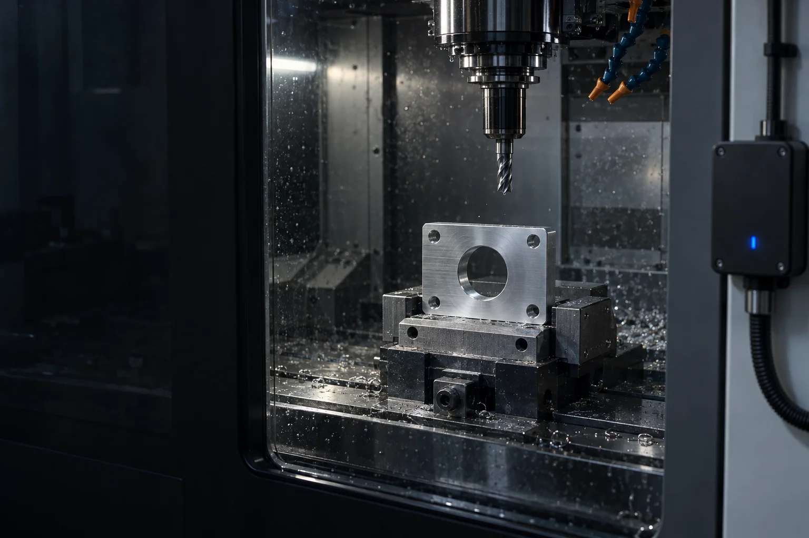
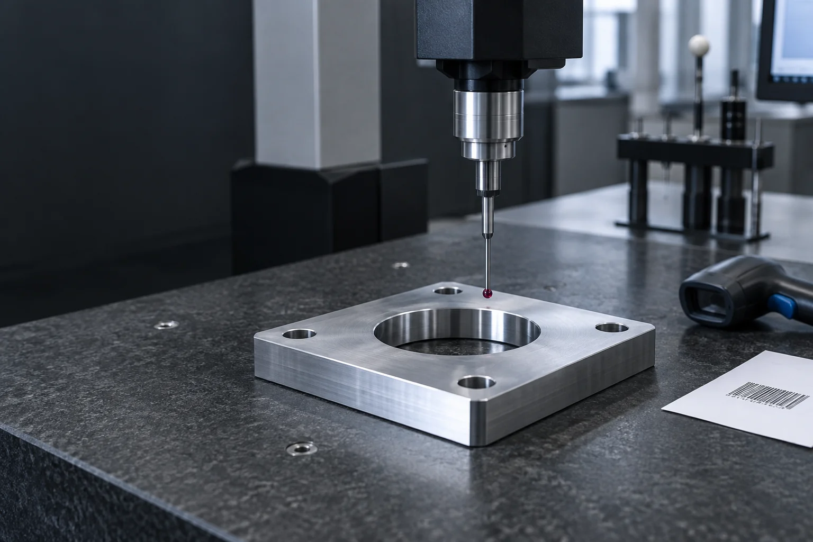
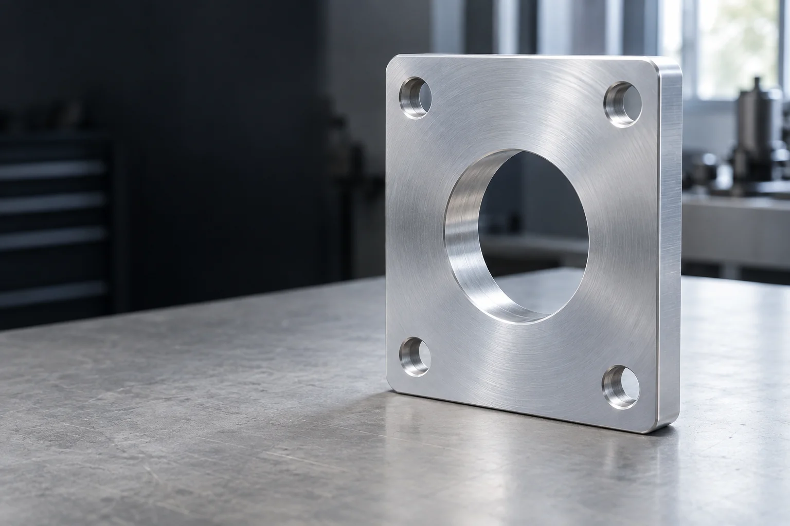

VARTUL / PRECISION ENGINEERING
Every part.
Every step.
From the material lot to the finished component.
Keep the making connected.
01 / MATERIAL & WORK ORDER
Start with
the material.
Aluminium stock arrives with a lot identity.
The work order carries it into production.
An illustrative machined aluminium mounting plate.
The actual route depends on the drawing and material specification.
Identity before
transformation.
The receiving note is linked. The supporting supplier material document is still missing.
02 / CNC MACHINING
The cut changes.
The link stays.
Workholding. Toolpath. Machined features.
Connect the machine event to its work order.

Cycle completed.
Event MC–024 is linked to the work order and its part identity.
03 / DEBURR & CLEAN
Refine the edges.
Retain the story.
The machined plate moves through
deburring and cleaning before inspection.
More than
a machine cycle.
Keep the finishing operation attached to the same part. A completed cycle does not establish finished quality.
04 / DIMENSIONAL INSPECTION
Measure the part.
Review the record.
Connect the inspection document
to the component it describes.
Sample inspection context. No tolerance, calibration
or certified performance claim is represented.

Report attached.
Review pending.
The inspection document is linked; reviewer sign-off is not attached.
05 / IDENTIFIED PART TO DISPATCH
Made into a part.
Kept as a story.
Part identified. Dispatch recorded.
The receiving handoff remains open.
One representative mounting plate.
Imagery and records illustrate the route, not actual production.
PT–024–01
identified.
The sample part ID connects to its work order, process and inspection records.
06 / THE MAKING BEHIND THE PART
Scan the part.
Trace every step.
One identifier. A connected manufacturing history.

PART → PROCESSES → MATERIAL LOT
The making, in reverse.
Follow this component through inspection, finishing and machining to its incoming aluminium lot.
Simulated identifier scan · No camera or live connection
- Part
- Inspection
- Finishing
- Machining
- Material lot
Read the manufacturing route as a list
- →
- Machining →
- Finishing →
- Inspection →
- Part →
Illustrative lots, events and records. Captured data connects the story; chain verification requires reviewing the evidence behind it.
VARTUL FOR PRECISION ENGINEERING
Connect the process.
Carry the evidence.
Chain Verification
Review source, process and handoff records. Keep missing evidence visible.
An interactive demonstration. No live machine integrations or actual production data are connected.